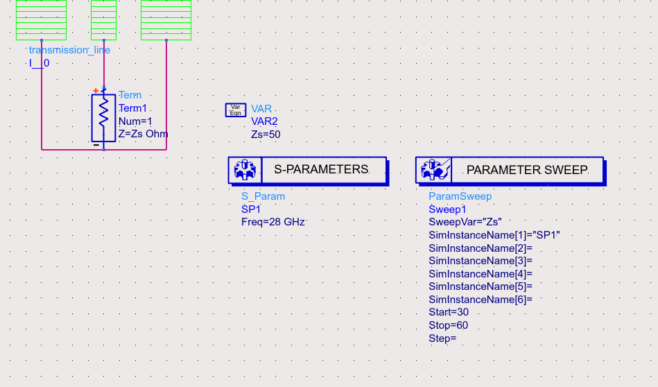
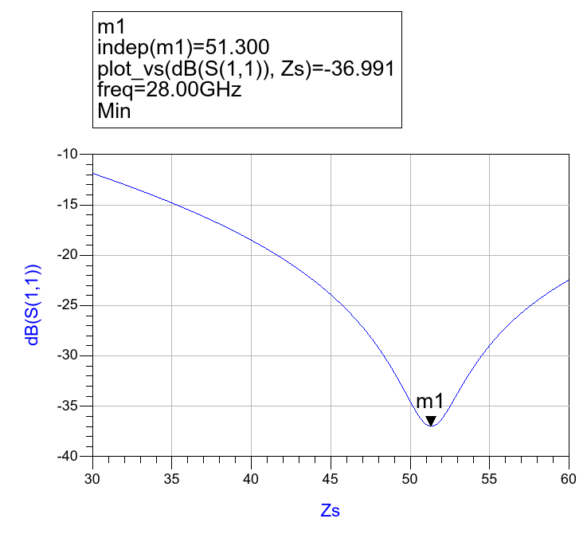
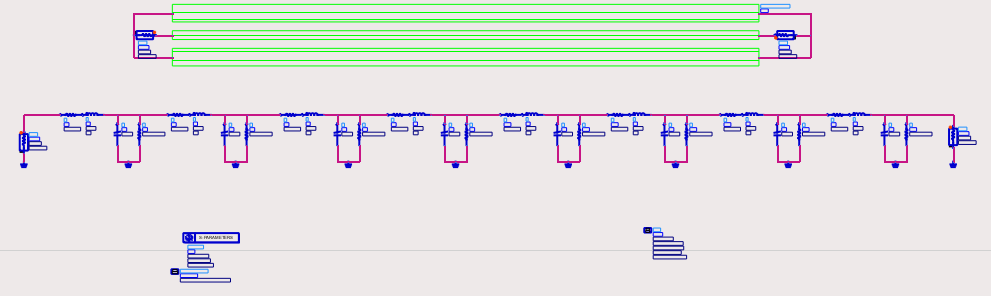
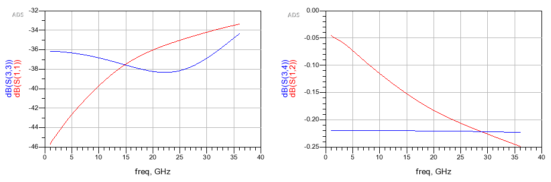

How to Model RLGC Transmission Line
Transmission Line Equations
This part deals with the conversion between RLGC parameters and the $\gamma$ Z parameters.
RLCG to $\gamma$ Z
$\gamma$ Z to RLCG
Obtain Z and $\gamma$ from simulation

Real part of characteristic impedance is given by

Use Matlab to obtain RLGC, Z and $\gamma$
Calculation
MATLAB code
1 | PolartoComplex = @(len, the) len*cos(the*pi/180) + 1i*len*sin(the*pi/180); |
Corresponding output is
1 | R: 5.1717e+03 |
Verification
Using 8 RLGC segments

Detailed schematic of each one

Results

Questions
How to convert $\alpha, \beta$ parameters to $A, \epsilon$ parameters?
- Post link: https://triblemany.github.io/archives/afb86e77/transmission-line.html
- Copyright Notice: All articles in this blog are licensed under BY-NC-SA unless stating additionally.